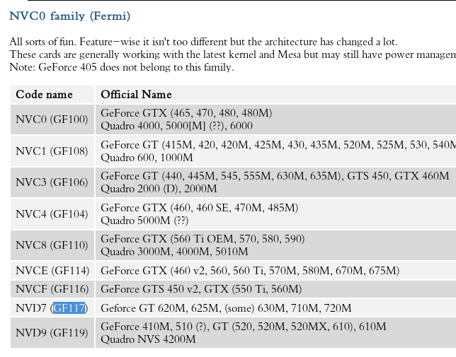

archlinux安装nvidia驱动
目录
查看nvida网卡型号
dmesg |grep -i nvidia
[ 3.092611] nouveau 0000:01:00.0: NVIDIA GF117 (0d7000a2)
这里可以看出我们的nvida网卡型号为 GF117
根据网卡型号查询code name
去 这里 搜索 GF117, 有结果：

可以看出对应的Code name是NVD7
根据codename查询archlinux上对应的驱动包
根据 archwiki 中的说明， NVDx 系的网卡对应的安装包为 nvidia-390xx
pacman -Ss nvidia-390xx
extra/nvidia-390xx 390.67-4
NVIDIA drivers for linux, 390xx legacy branch
extra/nvidia-390xx-dkms 390.67-4
NVIDIA driver sources for linux, 390xx legacy branch
extra/nvidia-390xx-lts 1:390.67-1
NVIDIA drivers for linux-lts, 390xx legacy branch
extra/nvidia-390xx-settings 390.67-2
Tool for configuring the NVIDIA graphics driver, 390xx legacy branch
extra/nvidia-390xx-utils 390.67-2
NVIDIA drivers utilities
extra/opencl-nvidia-390xx 390.67-2
OpenCL implemention for NVIDIA
其中 nvidia-390xx 对应 linux kernel, nvida-390xx-lts 对应 linux-lts kernel, nvidia-390xx-dkms 对应其 他自编译的linux kernel
我这里用的只是普通的 linux kernel,因此直接安装 nvidia-390xx 即可
sudo pacman -S nvidia-390xx nvidia-390xx-settings nvidia-390xx-utils --noconfirm
resolving dependencies... looking for conflicting packages... Packages (1) nvidia-390xx-390.67-4 Total Installed Size: 9.21 MiB Net Upgrade Size: 0.00 MiB :: Proceed with installation? [Y/n] (0/1) checking keys in keyring [----------------------] 0% (1/1) checking keys in keyring [######################] 100% (0/1) checking package integrity [----------------------] 0% (1/1) checking package integrity [######################] 100% (0/1) loading package files [----------------------] 0% (1/1) loading package files [######################] 100% (0/1) checking for file conflicts [----------------------] 0% (1/1) checking for file conflicts [######################] 100% (0/1) checking available disk space [----------------------] 0% (1/1) checking available disk space [######################] 100% :: Processing package changes... (1/1) reinstalling nvidia-390xx [----------------------] 0% (1/1) reinstalling nvidia-390xx [----------------------] 0% (1/1) reinstalling nvidia-390xx [----------------------] 0% (1/1) reinstalling nvidia-390xx [----------------------] 0% (1/1) reinstalling nvidia-390xx [----------------------] 0% (1/1) reinstalling nvidia-390xx [----------------------] 0% (1/1) reinstalling nvidia-390xx [----------------------] 0% (1/1) reinstalling nvidia-390xx [----------------------] 0% (1/1) reinstalling nvidia-390xx [----------------------] 0% (1/1) reinstalling nvidia-390xx [----------------------] 0% (1/1) reinstalling nvidia-390xx [----------------------] 0% (1/1) reinstalling nvidia-390xx [----------------------] 0% (1/1) reinstalling nvidia-390xx [######################] 100% :: Running post-transaction hooks... (1/2) Updating linux module dependencies... (2/2) Arming ConditionNeedsUpdate...
DRM kernel mode设置
添加 nvidia-drm.modeset=1 到kernel的启动参数中
修改 /etc/default/grub, 为 GRUB_CMDLINE_LINUX_DEFAULT 行添加参数 resume=/dev/sda2
sudo sed -i '/GRUB_CMDLINE_LINUX_DEFAULT/ s!"$! nvidia-drm.modeset=1"!' /etc/default/grub
添加 nvidia,nvidia_modeset,nvidia_uvm,nvidia_drm 到initramfs module中
修改 /etc/mkinitcpio.conf 文件，在 HOOKS 中添加 resume
sudo sed -i '/^MODULES=/ s/)/ nvidia nvidia_modeset nvidia_uvm nvidia_drm)/' /etc/mkinitcpio.conf
重新生成initramfs
sudo mkinitcpio -g /boot/initramfs-linux.img
==> Starting build: 4.17.3-1-ARCH -> Running build hook: [base] -> Running build hook: [udev] -> Running build hook: [autodetect] -> Running build hook: [modconf] -> Running build hook: [block] -> Running build hook: [filesystems] -> Running build hook: [keyboard] -> Running build hook: [fsck] ==> Generating module dependencies ==> Creating gzip-compressed initcpio image: /boot/initramfs-linux.img ==> Image generation successful
添加pacman hook
由于每次更新nvidia驱动都需要重新运行 mkinitcpio, 因此最好通过 pacman hook来自动运行
[Trigger] Operation=Install Operation=Upgrade Operation=Remove Type=Package Target=nvidia-390xx [Action] Depends=mkinitcpio When=PostTransaction Exec=/usr/bin/mkinitcpio -P
使用bumblebee
安装 bumblebee
sudo pacman -S bumblebee --noconfirm
resolving dependencies... looking for conflicting packages... Packages (1) bumblebee-3.2.1-17 Total Installed Size: 0.12 MiB Net Upgrade Size: 0.00 MiB :: Proceed with installation? [Y/n] (0/1) checking keys in keyring [----------------------] 0% (1/1) checking keys in keyring [######################] 100% (0/1) checking package integrity [----------------------] 0% (1/1) checking package integrity [######################] 100% (0/1) loading package files [----------------------] 0% (1/1) loading package files [######################] 100% (0/1) checking for file conflicts [----------------------] 0% (1/1) checking for file conflicts [######################] 100% (0/1) checking available disk space [----------------------] 0% (1/1) checking available disk space [######################] 100% :: Processing package changes... (1/1) reinstalling bumblebee [----------------------] 0% (1/1) reinstalling bumblebee [######################] 100% :: Running post-transaction hooks... (1/4) Reloading system manager configuration... (2/4) Creating system user accounts... (3/4) Reloading device manager configuration... (4/4) Arming ConditionNeedsUpdate...
添加当前用户到 bumblebee 组
sudo gpasswd -a ${USER} bumblebeeAdding user lujun9972 to group bumblebee
修改
/etc/bumblebee/bumblebee.conf将
Driver=修改为Driver=nvidia将KernelDriver=nouveau修改为KernelDriver=nvidia启用 bumblebeed.service
sudo systemctl enable bumblebeed sudo systemctl start bumblebeed
检查GPU状态
nvidia-smi
Wed Jun 27 07:17:30 2018 +-----------------------------------------------------------------------------+ | NVIDIA-SMI 390.67 Driver Version: 390.67 | |-------------------------------+----------------------+----------------------+ | GPU Name Persistence-M| Bus-Id Disp.A | Volatile Uncorr. ECC | | Fan Temp Perf Pwr:Usage/Cap| Memory-Usage | GPU-Util Compute M. | |===============================+======================+======================| | 0 NVS 5200M Off | 00000000:01:00.0 N/A | N/A | | N/A 46C P0 N/A / N/A | 0MiB / 964MiB | N/A Default | +-------------------------------+----------------------+----------------------+ +-----------------------------------------------------------------------------+ | Processes: GPU Memory | | GPU PID Type Process name Usage | |=============================================================================| | 0 Not Supported | +-----------------------------------------------------------------------------+